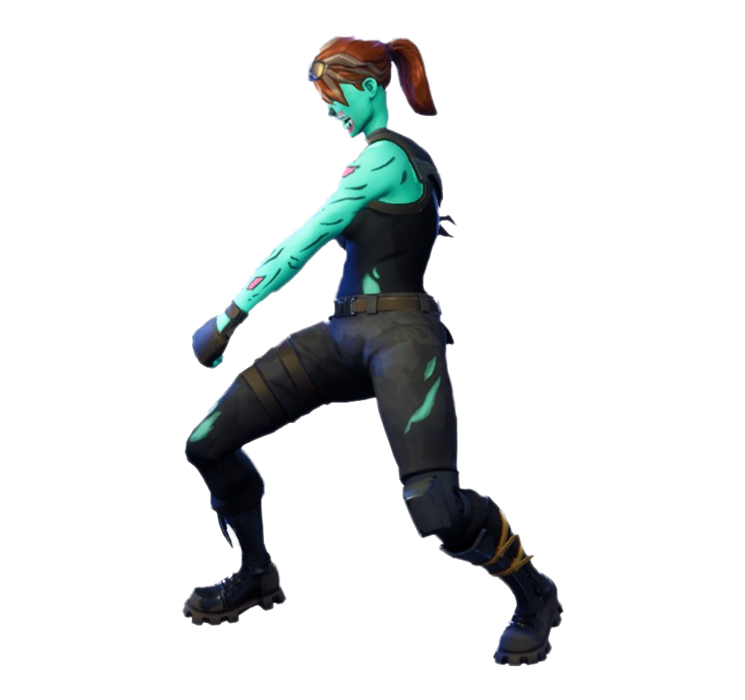
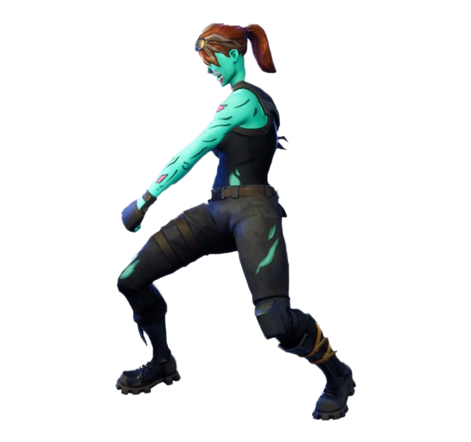

Játék célja
A fortnite maga egy battle royale játék amiben a célunk az az, hogy akivel találkozunk azt megöljük és így legyen esélyünk megnyerni a játékot.
A harc
A fent látható animáció nagyon jól bemutatja, hogy a Fortnite játékban egymás megölésével tehetünk szert a nyerésre. A bal oldalón látható csodás karácsonyi kinézetben lévő ember egy pump shoutgunnal éppen lelővi a mellette békésen táncoló embert.
Fortnite
A Fortnite az Epic Games által fejlesztett és 2017-ben kiadott videójáték. Három különálló játékmódverzióban érhető el, melyek ugyanazt az általános játékmenetet követik és motorjuk is ugyanaz: a Fortnite: Save the World (fizetős játékmód) kooperatív lövöldözős-túlélőjáték, melyben négy játékosnak zombiszerű lényeket kell megölniük és tárgyakat (embereket) kell megvédeniük az erődítményeikkel; a Fortnite Battle Royale ingyenesen játszható battle royale játék, melyben 100 játékos azért harcol, hogy ő legyen az utolsó, aki talpon marad; illetve a Fortnite Creative, melyben a játékosok a fantáziájukat felhasználva építhetik meg egyedi szabályokkal a szigeteiket. Az előbbi kettő 2017-ben jelent meg, ezeket 2018. december 6-án követte a Creative.
Fortnite Battle Royale
2017 szeptemberében az Epic készen állt ahhoz, hogy ezt a játékmódot hozzáadja a Save the World fizetős korai hozzáférésű verziójához, azonban később úgy döntött, hogy inkább Fortnite Battle Royale címen különállóan, ingyenesen játszható, azonban mikrotranzakciókkal támogatott formában jelenteti meg azt. Ez a változat gyorsan hatalmas játékosbázist alakított ki; megjelenése utáni első két hétben több mint 10 millió felhasználói fiókot regisztráltak.